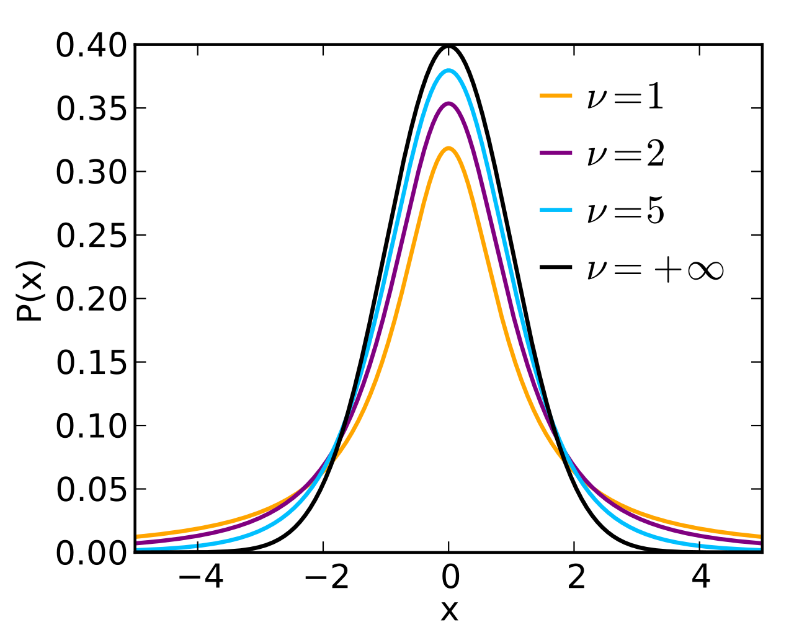

t-SNE 可视化降维方法简介
介绍
t-distributed stochastic neighbor embedding (t-SNE)[1] 是一种基于概率将高维数据降为低维的降维方法，通常被用于将高维数据进行2维或3维的可视化。
传统的线性方法主要将不相似的点在低维表示中分开。
PCA (Principle Components Analysis, 主成分分析)
MDS (Multiple Dimensional Scaling, 多维缩放)
对处于低维流形上的高维数据而言，更重要地是让相邻点在低维表示中保持相邻。非线性技术主要保持数据的局部结构 (Locality)。
Sammon mapping
LLE (Locally Linear Embedding, 局部线性嵌入)
LE (Laplacian Eigenmaps, 拉普拉斯特征映射)
Isomap (Isometric Mapping, 等度量映射)
和以上方法相同，t-SNE通过建立配对相似度 (pairwise similarities)来进行低维重构。
不同的是，t-SNE通过概率来建立配对相似度，而不是简单地通过距离建立。
首先我们先介绍t-SNE的前身，SNE (Stochastic Neighbor Embedding, 随机近邻嵌入)
SNE
SNE首先通过概率来建立配对相似度。
配对相似度-基于条件概率
给定一组高维数据点$x_1,x_2,\cdots,x_n$，$p_{j|i}$是$x_i$会将$x_j$选为邻居的条件概率。这里的比值是邻居和所有点的高斯分布概率密度之比。
$$
p_{j|i}=\frac{exp(-||x_i-x_j||^2/2\sigma_i^2)}{\sum\limits_{k\neq i}exp(-||x_i-x_k||^2/2\sigma_i^2)}
$$
注意：1）分母即归一化。2）默认$p_{i|i}=0$。3）每不同数据点$x_i$有不同的$\sigma_i$。其计算方式将在下面叙述。
同样的，对于低维表示，定义同样的条件概率。不同的是，为了消除缩放对数据点的影响，同时也为了方便计算，这里指定$\sigma_i = \frac{1}{\sqrt{2}}$。
$$
q_{j|i}=\frac{exp(-||y_i-y_j||^2)}{\sum\limits_{k\neq i}exp(-||y_i-y_k||^2)}
$$
注意：1）若$\sigma_i$取其他值，也只影响缩放。
则可以认为，如果建模正确，低维映射$y_i$和$y_j$的相似度应该和高维数据$x_i$和$x_j$的相似度相等。
损失函数-基于KL散度
基于这个想法，SNE意图找到一个可以减小$p_{j|i}$和$q_{j|i}$之间失配 (mismatch) 的低维表示。
为了减少失配，首先需要方法来衡量它，SNE引入了KL散度 (Kullback-Leibler divergences)[2] 来衡量失配，损失函数 (cost function) 如下：
$$
C=\sum\limits_i KL(P_i||Q_i)=\sum\limits_i\sum\limits_j p_{j|i}\log \frac{p_{j|i}}{q_{j|i}}
$$
定义了$C$后，SNE采用梯度下降的方法来学习到合适的$y_i$，对$y_i$的梯度为：
$$
\frac{\partial C}{\partial y_i}=2\sum\limits_j(p_{j|i}-q_{j|i}+p_{i|j}-q_{i|j})(y_i-y_j)
$$
采用动量项来迭代更新$y_i$
$$
y_i^{(t)}=y_i^{(t-1)}+\eta \frac{\partial C}{\partial y_i}+\alpha(t)(y_i^{(t-1)}-y_i^{(t-2)})
$$
至此，SNE的过程已经介绍完毕，通过计算条件概率来得到$P$，初始化$Y$后，计算$Q$。之后通过动量梯度下降来更新$Y$，得到计算结果。
选取$\sigma_i$-基于熵
在数据集中，不同类别数据点的分布密度往往不同，因此不能定制一个所有点都适用的$\sigma$。
Every $\sigma_i$ is either set by hand or found by a simple binary search (Hinton and Roweis, 2003) or by a very robust root-finding method (Vladymyrov and Carreira-Perpinan, 2013)
这里介绍一种基于熵来限制分布自由度的方法。
熵增加，$\sigma_i$也增加，所以通过限制熵的大小来寻找合适的$\sigma_i$，让不同类别的数据点有一个大致相同的分布。定义困惑度 (perplexity) 如下
$$
Perp(P_i) =2^{H(P_i)}=2^{-\sum\limits_jp_{j|i}\log_2p_{j|i}}
$$
这里的$H(P_i)$是香农熵，通常指定的困惑值在5和50之间。
由于$Perp(\cdot)$函数是单调函数，可以采用二分的方法来寻找$\sigma_i$。
SNE局限 (Limitations)
- Cost function 难以优化。偏导 $2\sum\limits_j(p_{j|i}-q_{j|i}+p_{i|j}-q_{i|j})(y_i-y_j)$ 难以计算。
- Crowding problem。在二维映射空间中，能容纳（高维空间中的）中等距离间隔点的空间，不会比能容纳（高维空间中的）相近点的空间大太多。所以高维空间中离得远的、近的点，在低维空间中都被塞在了一起，引起了拥挤问题。
t-SNE
t-SNE在SNE的基础上进行了改进，优化了SNE的Limitations。
- Cost function 难以优化 $\Longrightarrow$ 使用 Symmetric SNE。
- Crowding problem $\Longrightarrow$ 在低维嵌入上使用Student’s t-distribution 替代 Guassian distribution，同时也简化了cost function。
下面，我们将分别针对这些优化进行介绍。
Symmetric SNE
在高维空间中定义联合概率$p_{ij}$为对称条件概率：
$$
p_{ij}=\frac{p_{j|i}+p_{i|j}}{2n}
$$
则cost function为：
$$
C=KL(P||Q)=\sum\limits_i\sum\limits_jp_{ij}\log\frac{p_{ij}}{q_{ij}}
$$
则简化后的偏导为：
$$
\frac{\partial C}{\partial y_i}=4\sum\limits_j(p_{ij}-q_{ij})(y_i-y_j)
$$
偏导形式相对SNE来说更简单，计算速度更快。
(注意：这只是Symmetric SNE的梯度公式，t-SNE的梯度公式类似，推导见后。)
Crowding problem
“crowding problem”:
The area of the two-dimensional map that is available to accommodate moderately distant datapoints will not be nearly large enough compared with the area available to accommodate nearby datapoints.
在SNE局限中已经提到过，由于在低维空间中，能容纳的点一定比高维空间中的少，所以高维空间中远的、近的点，在低维空间中往往被塞在一起。
这个问题其实是由于高斯概率分布造成的，高斯分布对于中等距离和较近距离的区分较少，也即，不能对近距离的点做出明显区分。因此，对于低维表示，t-SNE采用t分布来替换高斯分布。

上图横轴表示距离，纵轴表示相似度，可以看到，对较大相似度的点，t分布在低维空间中的距离需要更小一点，对于低相似度的点，t分布在低维空间中需要的距离更远。
所以，可以使同一簇内的点聚合地更紧密，不同簇之间的点更加疏远，解决crowding problem。
t-SNE配对相似度及损失函数
至此为止，我们可以定义联结概率 (joint probabilities) $q_{ij}$：
$$
q_{ij}=\frac{(1+||y_i-y_j||^2)^{-1}}{\sum\limits_{k\neq l}(1+||y_k-y_l||^2)^{-1}}
$$
注意：和SNE的$q_{j|i}$公式相比，分母的求和号中，之前是$k\neq i$，表示仅排除 $i$ 自身项；现在是 $k\neq l$ ，表示排除所有自身项。也就是点对间所有两两之差。
损失函数 (cost function) 为：
$$
\frac{\partial C}{\partial y_i}=4\sum\limits_j(p_{ij}-q_{ij})(y_i-y_j)(1+||y_i-y_j||^2)^{-1}
$$
推导详见 Maaten & Hinton, 2008[4] Appendix A.
至此，我们已经得到了t-SNE的损失函数，可以同样通过SNE中提到的动量迭代法来求解$Y$。
接下来，对t-SNE的优势和局限性做一个总结。
优势及局限性
Advantages：
- 相较于LLE和LE等算法来说，t-SNE中点的相似度 (similarity) 由概率密度表示，不用KNN指定邻居，减少了参数量。
- 每个点的局部邻居由概率密度表示，具有适应性 (相当于可以对每个点自定义邻居数量)。
- 高维数据中高斯密度的应用让t-SNE保有局部特征的同时，维护全局结构。(不太懂)
Gaussian kernel employed by t-SNE (in high-dimensional) defines a soft border between the local and global structure of the data.
- 相较于SNE，t-SNE采用t分布后消除了一部分指数计算，计算效率更高，计算更快。
Limitations：
- t-SNE不一定适用于超过三维的降维。对于超过三维的更高维度，t分布可能需要采用更高的自由度才更加合适。
It is unclear t-SNE would perform on general Dimensionality Reduction for more than 3 dimensions. For such higher (than 3) dimensions, Student-t distribution with more degrees of freedom should be more appropriate.
- t-SNE也是通过数据的局部结构来执行降维任务的，因此可能对某些高维数据失效 (数据本身就是高维的，无法找到一种恰当的低维表示)
t-SNE reduces the dimensionality of data mainly based on local properties of the data which means it would fail in data which has intrinsically high dimensional structure (curse of dimensionality).
- t-SNE的损失函数不是凸函数，因此在构造解的时候不会有固定解，而且没有一种有效且固定的解法，只能通过迭代求解。
关联概念
KL散度
上文中提到的KL散度是一种衡量概率差别的方法，是两个概率分布$P$和$Q$差别的非对称度量。
KL散度 (Kullback-Leibler divergence，简称KLD)，在讯息系统中称为相对熵 (relative entropy)[2]。
定义
对于离散随机变量，它的概率分布$P$和$Q$的KL散度可按下式定义为
$$
D_{KL}(P||Q)=\sum\limits_iP(i)\ln\frac{P(i)}{Q(i)}
$$
即按概率$P$求得的$P$和$Q$的对数商的平均值。KL散度仅当概率$P$和$Q$各自总和均为1，且对于任何$i$皆满足$Q(i)>0$以及$P(i)>0$时才有定义。
特性
KLD的值为非负数：
$$
D_{KL}(P||Q)\ge 0
$$
当且仅当$P=Q$时$D_{KL}(P||Q)$为零。
虽然从直觉上KL散度是个度量或距离函数，但是它实际上并不是一个真正的度量或距离。因为KL散度具有不对称性：
$$
D_{KL}(P||Q)\neq D_{KL}(Q||P)
$$
Student’s t-distribution
学生t分布 (Student’s t-distribution)，简称t分布，在概率论及统计学中用于根据小样本来估计总体呈正态分布且标准差未知的期望值[3]。
其概率分布密度函数 (Probability Density Function, PDF) 为
$$
f(t)=\frac{\Gamma(\frac{v+1}{2})}{\sqrt{v\pi}\Gamma(\frac{v}{2})}(1+\frac{t^2}{v})^{-\frac{v+1}{2}}
$$
其中 $v$ 是自由度 。
特殊情况，当 $v=1$ 时
$$
f(t)=\frac{1}{\pi(1+t^2)}
$$
这种概率分布也叫作柯西分布 (Cauchy distribution)。在t-SNE中用到的也是柯西分布。
特殊情况，当 $v=\infty$ 时
$$
f(t)=\frac{1}{\sqrt{2\pi}}e^{-\frac{t^2}{2}}
$$
称为高斯/正态分布。
t分布的概率密度图如下图所示。
